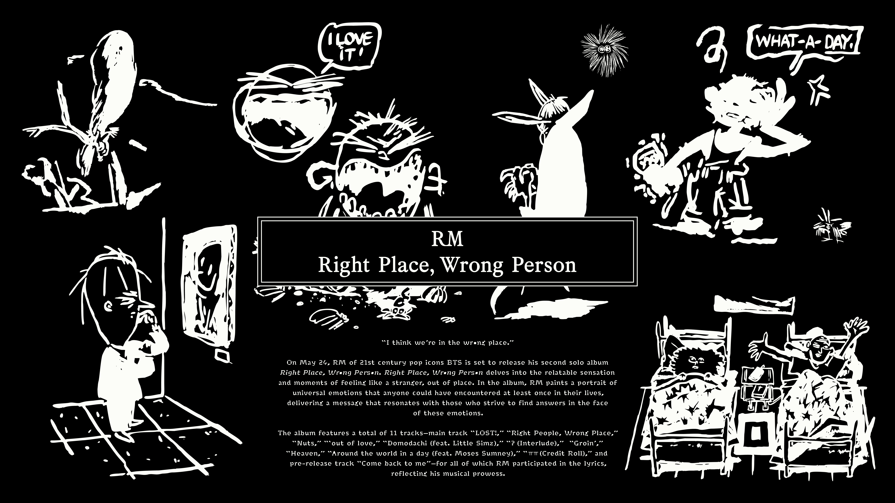
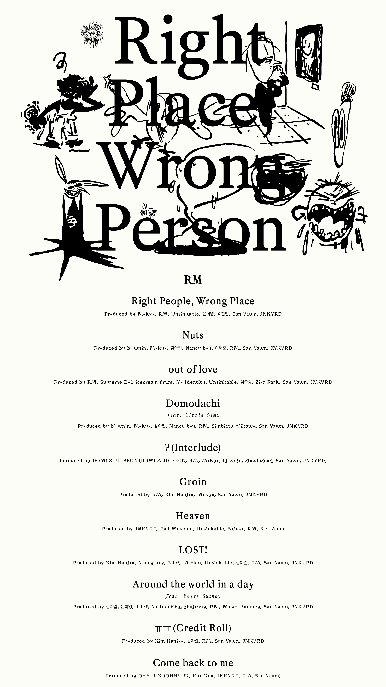
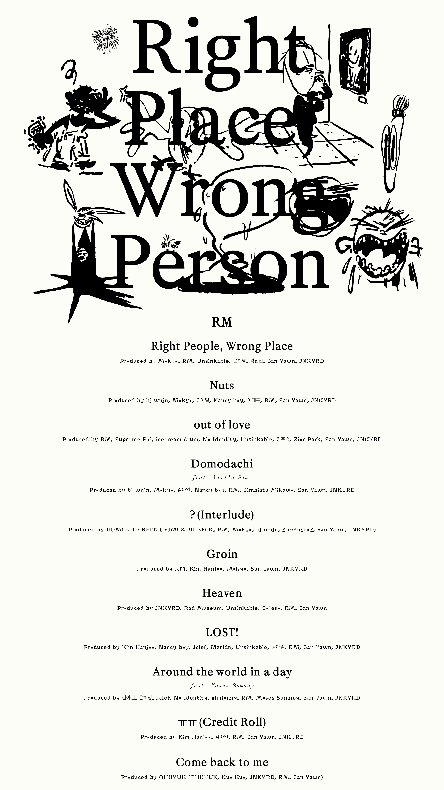

Kim Namjoon, conocido por su nombre artistico RM, líder de BTS; ha destacado como rapero, productor y compositor, en 2024, lanzó "Right Place, Wrong Person", siendo el segundo álbum de estudio del artista, lanzado el 24 de mayo. Con un sonido más experimental y alternativo, el disco incluye el sencillo "Come Back to Me" y colaboraciones con Little Simz, Domi & JD Beck y Moses Sumney. El álbum fue elogiado por la crítica por su introspección y fusión de géneros, debutando en el top 5 del Billboard 200 y liderando la lista de Top Rap Albums. Para complementar el lanzamiento, RM estrenó el documental "Right People, Wrong Place", mostrando su proceso creativo y visión artística.

Concept photos


Get to know the creator
 
